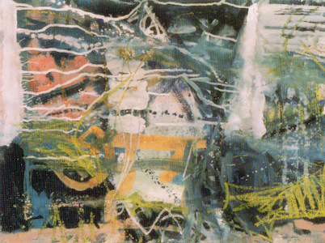

February

Cocktree Throat
Lawrence Freiesleben
Since first showing work at the Monica Jones Gallery, Leighton Buzzard, in 1979, Lawrence Freiesleben (born at Hammersmith in 1962) has exhibited widely, mostly in London and the South-West," having had more than forty one person exhibitions and numerous group shows at venues including the old Margaret Fisher in Hampstead, the Mermaid Theatre, and the DeMorgan Centre in London.
Additional venues include: Plymouth City Art Gallery; Alpha House Gallery, Sherborne, Dorset; Dartmoor Gallery, Princetown; The Queens Hall, Edinburgh; Salisbury Playhouse; Buckinghamshire Museum & Art Gallery; Maltby Contemporary Art, Winchester; Walker Gallery, Harrogate; Bridport Open (First Prize in both 1995 and 1998); Maymie White Contemporary Art; Logos, London; Southampton City Art Gallery; The Guildhall, Cambridge; The International Art Fair, Olympia, The Salthouse Gallery, St. Ives; Spacex Gallery, Exeter; Camden and London Group Open Exhibitions
“He was unaware how far his paintings had strayed from normal life . . . into a distant realm whose strange and dominant vitality he would never be able to explain. This pretentious, absurd, idea of Truth, blithely skating over most of the designations of morality, was not open to compromise.” (from Estuary and Shadow).
February
Cocktree Throat
He has also always written: essays (chiefly on film), diatribes, poetry... His early, experimental novel The Bow, was first published in 1983 and a revised edition (described by the late Colin Wilson as "full of brilliant ideas and images" and by Brian Louis Pearce as "A liquid, lyric prose achievement of a high order...") was reprinted by the independent publisher Stride in 2000. In 2013 he finally completed Maze End and though not exactly conventional, this is more accessible than The Bow, and begins in a paradise garden with the narrator looking back on his “22nd Try” at life.
“Many years ago I was a musician in a couple of obscure late 70's bands. This was particularly useful experience for my third novel, Certainty Under the Rose, a searching love story set in the south-west of England in the early 1980's, forms a vague parallel world to Maze End, and is also, more closely echoed in the novel I'm currently working on, provisionally titled Estuary and Shadow."
Moor Night (1984)
Heart of Oak Cross (1988)
Door to the Night (1989)
Click here to email Lawrence...
Alternatively please write to: Lawrence Freiesleben, Hawkuplea, Ninebanks, Hexham, NE47 8DF